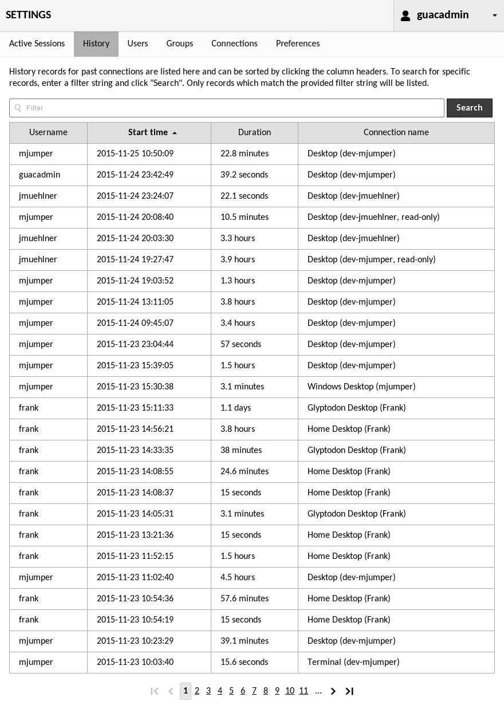

Administration¶
Users, user groups, connections, and active sessions can be administered from within the web interface if the underlying authentication module supports this. The only officially-supported authentication modules supporting this are the database extensions, which are documented in Database authentication.
If you are using the default authentication mechanism, or another authentication extension, this chapter probably does not apply to you, and the management options will not be visible in the Guacamole interface. If, on the other hand, you are using one of the database authentication providers, and you are logged in as a user with sufficient privileges, you will see management sections listed within the settings screen:

Clicking any of these options will take you to a corresponding management section where you can perform administrative tasks.
Managing sessions¶
Clicking “Active Sessions” navigates to the session management screen. The session management screen displays all active sessions and allows system administrators to kill them as needed.
When any user accesses a particular remote desktop connection, a unique session is created and will appear in the list of active sessions in the session management screen. Each active session is displayed in a sortable table, showing the corresponding user’s username, how long the session has been active, the IP address of the machine from which the user is connecting, and the name of the connection being used.

To kill one or more sessions, select the sessions by clicking their checkboxes. Once all desired sessions have been selected, clicking “Kill Sessions” will immediately disconnect those users from the associated connection.
Filtering and sorting¶
The table can be resorted by clicking on the column headers. Clicking any column will resort the table by the values within that column, while clicking a column which is already sorted will toggle between ascending and descending order.
The content of the table can be limited through search terms specified in the “Filter” field. Entering search terms will limit the table to only sessions containing those terms. For example, to list only connections by the user “guacadmin” which have been active since March, 2015, you would enter: “guacadmin 2015-03”. Beware that if a search term needs to contain spaces, it must be enclosed in double quotes to avoid being interpreted as multiple terms.

If you wish to narrow the content of the table to only those connections which originate from a particular block of IP addresses, you can do this by specifying the block in standard CIDR notation, such “10.0.0.0/8” or “2001:db8:1234::/48”. This will work with both IPv4 and IPv6 addresses.

Connection history¶
Clicking “History” navigates to the connection history screen. The connection history screen displays a table of the most recent connections, including the user that used that connection, the time the connection began, and how long the connection was used.

Filtering and sorting¶
Initially, the connection history table will display only the most recent history records. You can page through these records to see how and when Guacamole has been used.
Just as with the table of active sessions described earlier, the table of history records can be resorted by clicking on the column headers or filtered by entering search terms within the “Filter” field.
The same filtering format applies - a search term containing spaces must be enclosed in double quotes to avoid being interpreted as multiple terms, and only history records which contain each term will be included in the history table. Unlike the table of active sessions, however, the filter will only take effect once you click the “Search” button. This is due to the nature of the connection history, as the number of records may be quite extensive.
User management¶
Clicking “Users” within the list of settings sections will take you to the user management screen. Here you can add new users, edit the properties and privileges of existing users, and view the times that each user last logged in. If you have a large number of users, you can also enter search terms within the “Filter” field to filter the list of users by username.
To add a new user, click the “New User” button. This will take you to a screen where you will be allowed to enter the details of the new user, such as the password and username. Note that, unless you specify otherwise, the new user will have no access to any existing connections, nor any administrative privileges, and you will need to manually set the user’s password before they will be able to log in.

To edit a user, just click on the user you wish to edit. You will be taken to a screen which allows you to change the user’s password, expire their password (such that it must be changed at next login), add or remove administrative permissions, and add or remove read access to specific connections, sharing profiles, or groups. If you are managing a large number of connections or groups and wish to reduce the size of the list displayed, you can do so by specifying search terms within the “Filter” field. Groups will be filtered by name and connections will be filtered by name or protocol.
If you have delete permission on the user, you will also see a “Delete” button. Clicking this button will permanently delete the user. Alternatively, if you only wish to temporarily disable the account, checking “Login disabled” will achieve the same effect while not removing the user entirely. If they attempt to log in, the attempt will be rejected as if their account did not exist at all.

Editing group membership¶
When editing a user, the groups that user is a member of may be modified within the “Groups” section. By default, only groups that the user is already a member of will be displayed. If you have permission to modify the user’s membership within a group, an “X” icon will be available next to that group’s name. Clicking the “X” will remove the user from that group, taking effect after the user is saved.
To add users to a group, the arrow next to the list of groups must be clicked to expand the section and reveal all available groups. Available groups may then be checked/unchecked to modify the user’s membership within those groups:

If you have a large number of available groups, you can also enter search terms within the “Filter” field to filter the list of groups by name.
User group management¶
Clicking “Groups” within the list of settings sections will take you to the user group management screen. Here you can add new groups and edit the properties and privileges of existing groups. If you have a large number of user groups, you can also enter search terms within the “Filter” field to filter the list of groups by name:

To add a new group, click the “New Group” button. This will take you to a screen where you will be allowed to enter the details of the new group, including membership and any permissions that members of the group should have.
To edit a group, just click on the group you wish to edit. You will be taken to a screen which allows you to modify membership, add or remove administrative permissions, and add or remove read access to specific connections, sharing profiles, or connection groups. If you are managing a large number of connections or groups and wish to reduce the size of the list displayed, you can do so by specifying search terms within the “Filter” field. Connection groups will be filtered by name and connections will be filtered by name or protocol.
If you have delete permission on the group, you will also see a “Delete” button. Clicking this button will permanently delete the group. Alternatively, if you only wish to temporarily disable the effects of membership in the group, checking “Disabled” will achieve the same effect while not removing the group entirely.

Group membership of groups¶
Managing the group membership of groups is more complex than that of users, as groups may contain both users and groups, with permissions from parent groups possibly being inherited. Parent groups, member groups, and member users, can all be managed identically to the group memberships of users, with a corresponding section dedicated to each within the user group editor:

Note that it is ultimately up to the extension providing the group to determine how permissions granted to that group are inherited, if at all. The database authentication extension implements full recursive inheritance of group permissions, with permissions granted to a group being granted to all members/descendants of that group, regardless of how deeply those members are nested.
Connections and connection groups¶
Clicking “Connections” within the list of settings sections will take you to the connection management screen. The connection management screen allows administrators to create and edit connections, sharing profiles, and connection groups. If you have a large number of connections, you can also enter search terms within the “Filter” field to filter the list of connections by name or protocol.
To add a new connection or connection group, click the “New Connection” or “New Group” button, or the “New Connection” or “New Group” placeholders which appear when you expand an existing connection group. These options will take you to a screen where you will be allowed to enter the details of the new object, such as its location, parameters, and name. This name should be descriptive, but must also be unique with respect to other objects in the same location.
Once you click “Save”, the new object will be added, but will initially only be usable by administrators and your current user. To grant another user access to the new connection or connection group, you must edit that user or a user group that the user is a member of, checking the box corresponding to the connection or connection group you created.

Editing connections, sharing profiles, and connection groups works identically to editing a user. Click on the object you wish to edit, and you will be taken to screen which allows you to edit it. The screen will display all properties of the object, including its usage history, if applicable.
If you have delete permission on the object, you will also see a “Delete” button. Clicking this button will permanently delete the object being edited.

Connection organization and balancing¶
Connection groups can be either “organizational” or “balancing”. Each group can contain any number of other connections or groups, but the semantics of the group change depending on the type.
An organizational group behaves exactly as a folder or directory in a file system. It simply contains connections and other groups, but provides no other behavior. Clicking on an organizational group within a connection list will expand the group, revealing its contents.
A balancing group behaves as a connection. It dynamically balances load across the connections it contains, choosing the connection with the fewest number of active users. Unlike organizational groups, clicking on a balancing group causes a new connection to be opened. The actual underlying connection used depends on which connection has the least load at the time the group was clicked, and whether session affinity is enabled on that group.
Enabling session affinity for a balancing group ensures that users are consistently routed to the same underlying connections until they log out of Guacamole. The load balancing behavior of the balancing group will apply only for the first time a particular user connects to the group. If your users may lose their desktop state if they are routed to a different underlying connection, this option should be enabled.

Connection sharing¶
The ability to share a connection is governed through the use of “sharing profiles”. If a sharing profile is created for a connection, users with access to both that connection and that sharing profile will be able to share the connection with other users by generating connection sharing links, even if those users do not otherwise have user accounts within Guacamole.
The name of the sharing profile will be presented as an option within the share menu for any users with access, while the level of access granted to users of generated share links will be dictated by the parameters specified for the sharing profile.
Important
The only extension which ships with Guacamole and implements enough of the Guacamole extension API to share its connections is the database authentication extension. If you wish to share connections (or allow your users to share connections), you will need to use the database authentication extension to store those connections.
If you need to use other authentication schemes, keep in mind that the database authentication extension can be used alongside other extensions, with the database handling connection storage and permissions only. Writing your own extension which supports sharing is another alternative, though that may be overly complicated if everything you need is already provided.
Unlike connections and groups, there is no “New Sharing Profile” button. Sharing profiles are created through clicking the “New Sharing Profile” placeholders which appear when connections are expanded. Just as expanding a connection group reveals the connections or groups therein, expanding a connection reveals the sharing profiles associated with that connection. This holds true with both the list of connections in the connection management screen and the list of connections in the user editor.
Creating or editing a sharing profile is virtually identical to creating or editing a connection, with the exception that not all connection parameters are available: